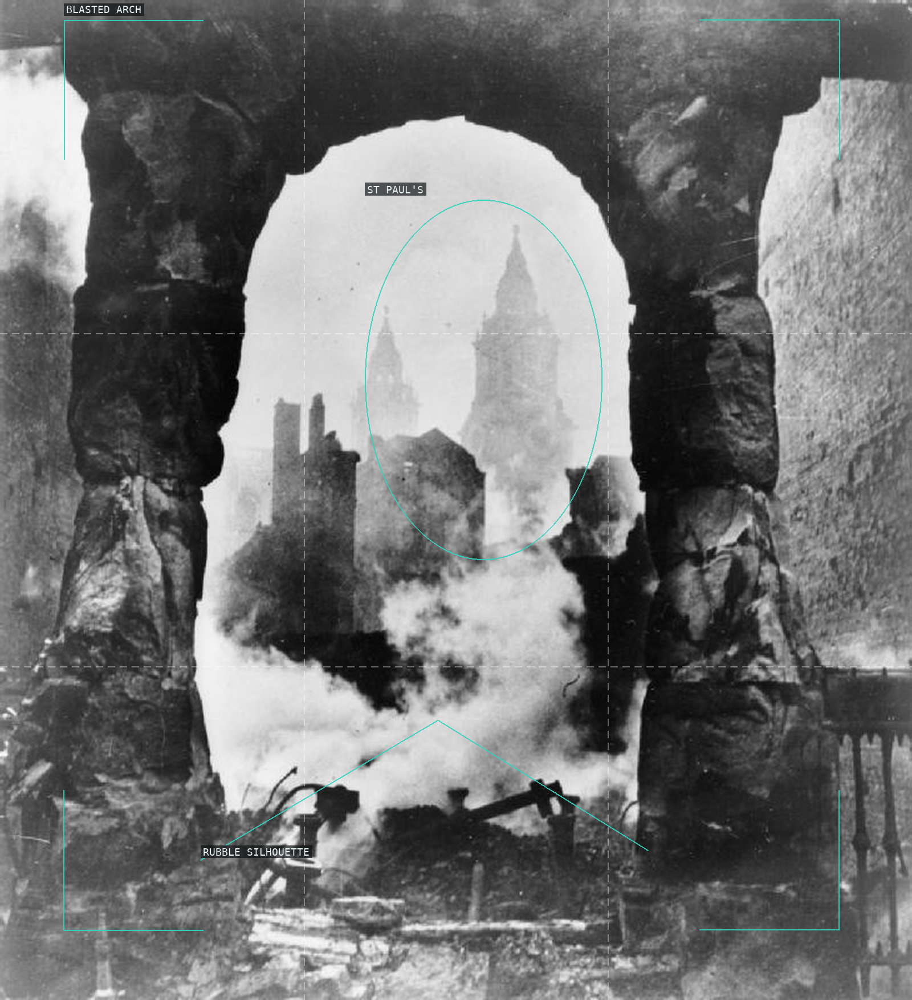
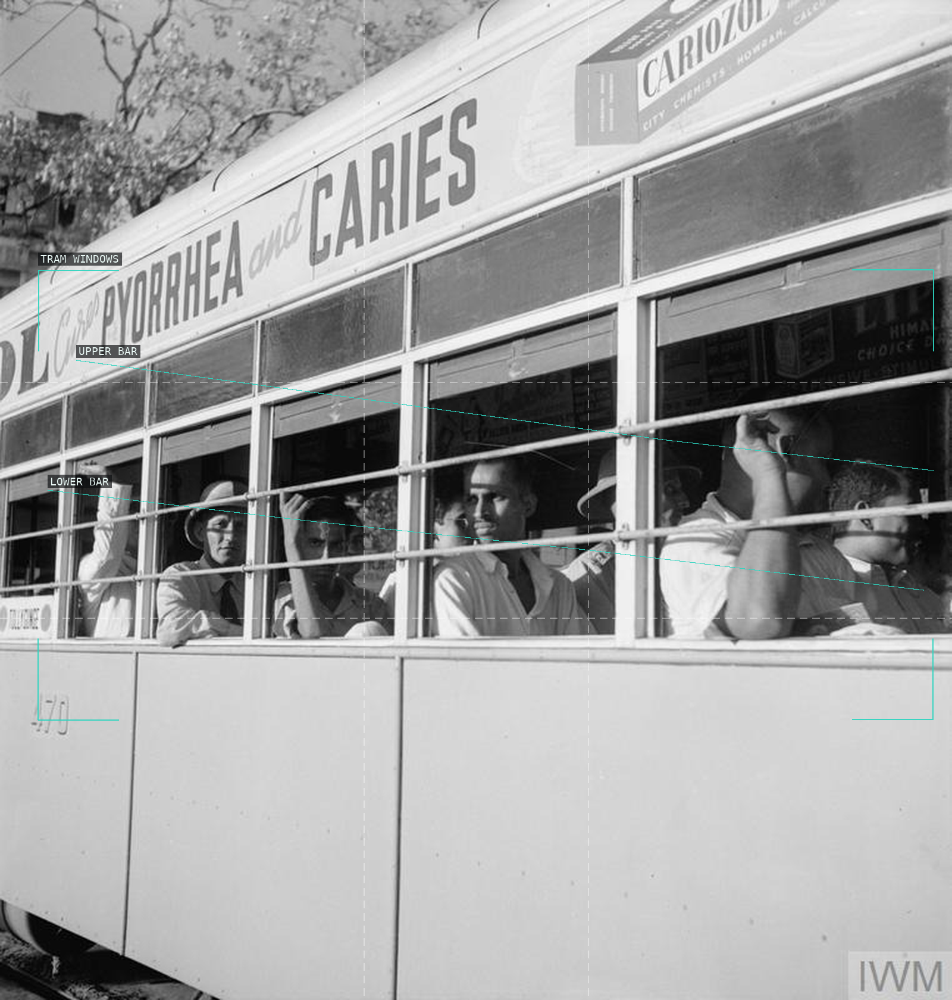
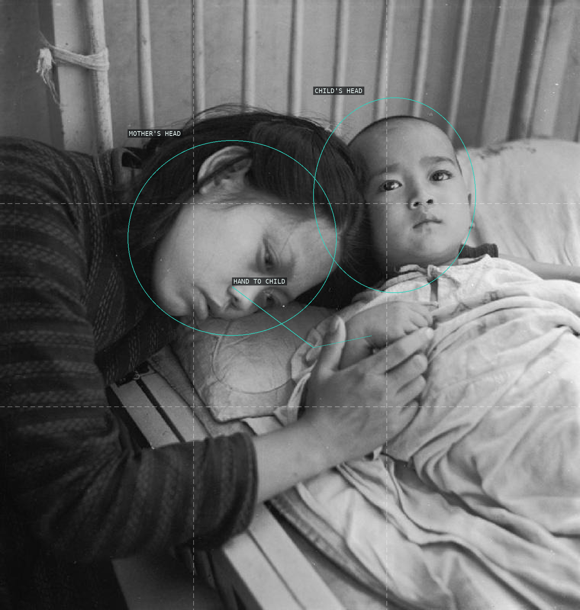
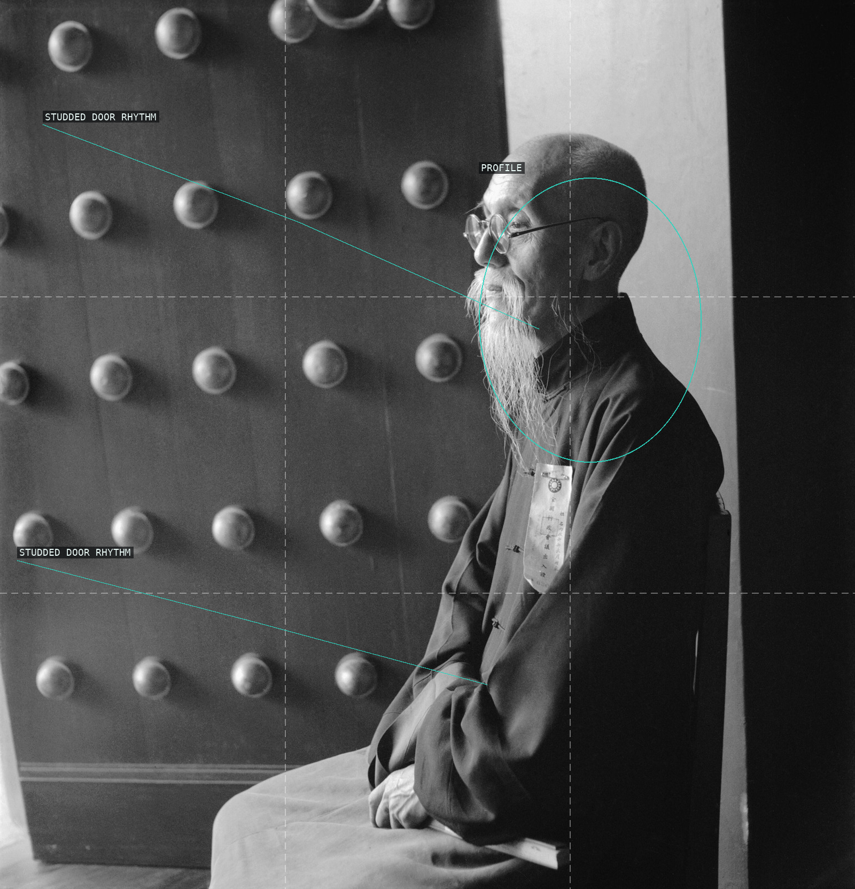
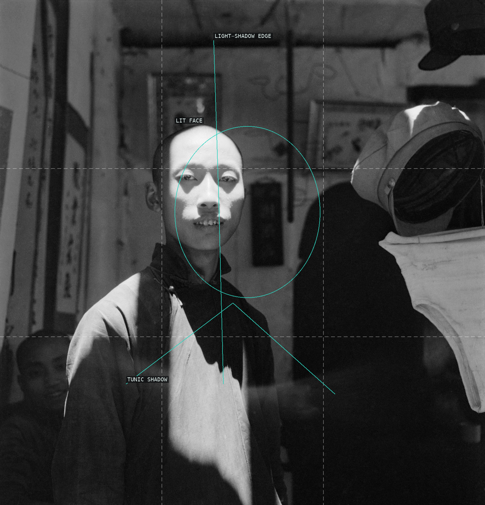
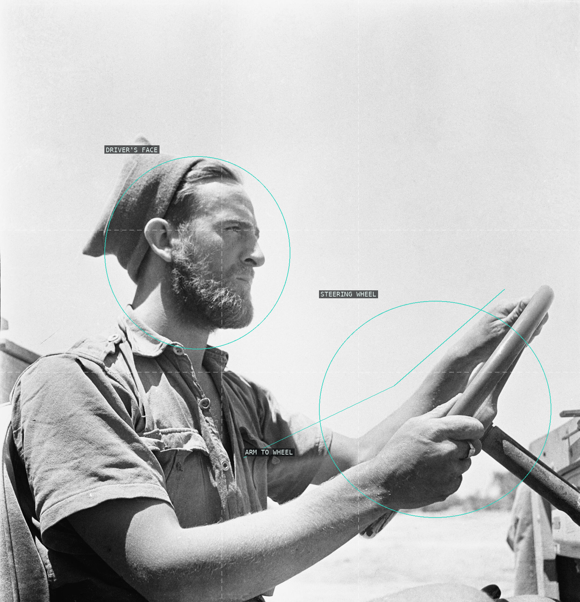
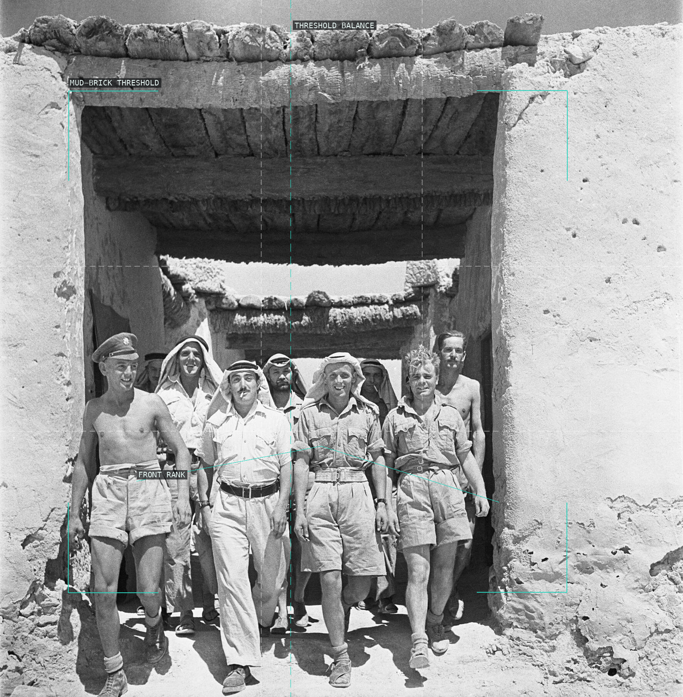
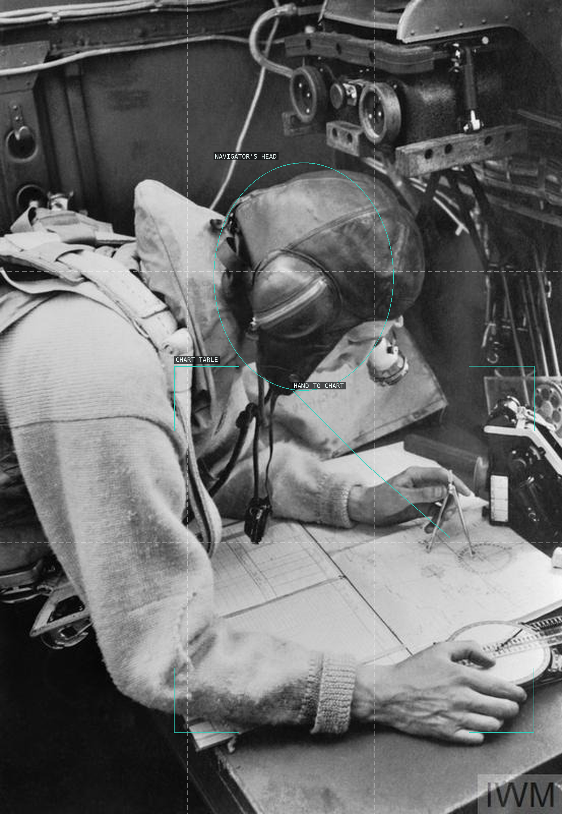
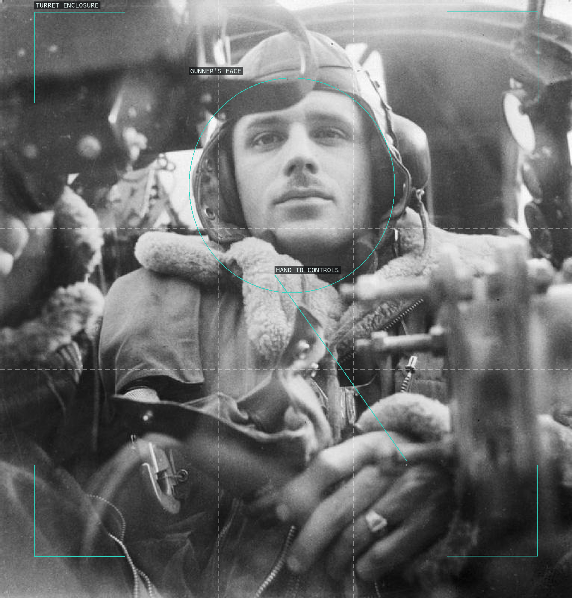
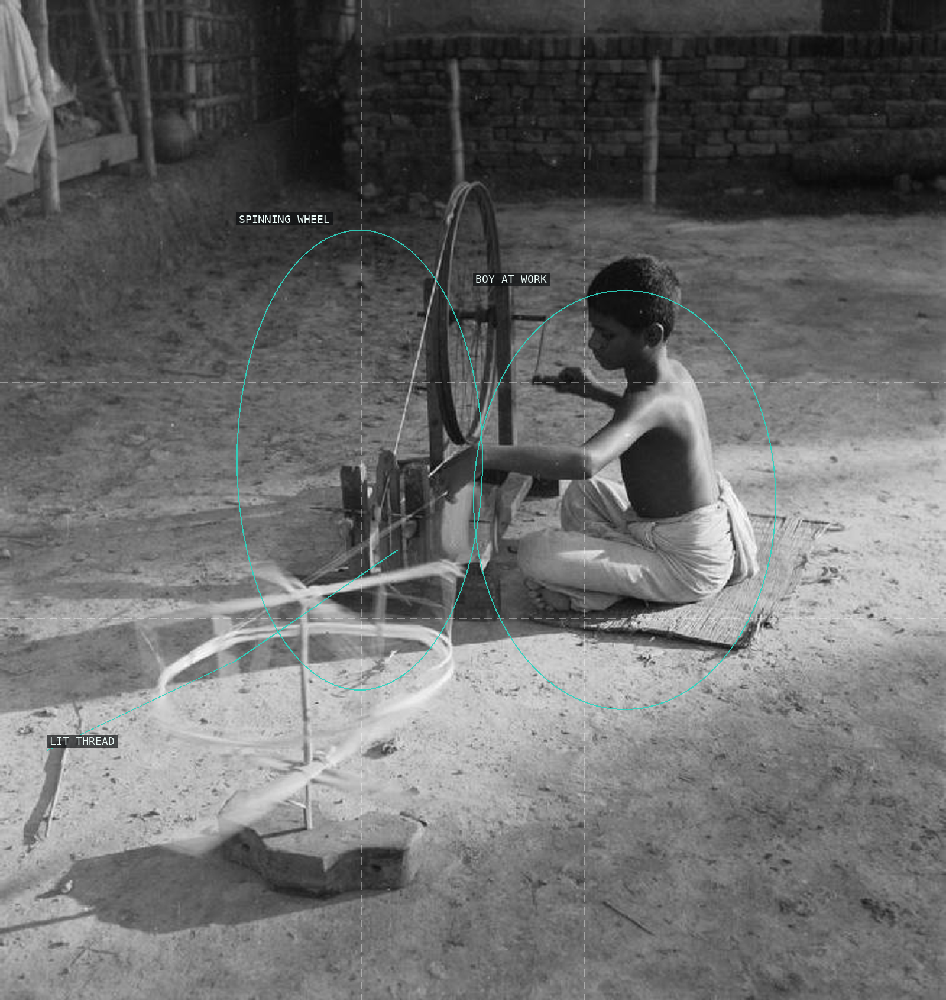

/* cecil-beaton - proofs */
10 plates. Deterministic overlays rendered by the composition-analysis skill.

01-st-pauls-through-archway
A ruined arch turns St Paul's into a distant, luminous image within the wreckage.

02-calcutta-tram-bars
The tram bars divide a crowded row of faces into a shallow, repeated sequence.

03-chengtu-mother-and-child
Two heads and the mother's hand make an intimate triangle above the bed's horizontal support.

04-chow-chung-yuch-door
A lit profile pauses against the door's repeated circular studs and deep dark field.

05-chengtu-man-sun-shadow
A hard shaft of light crosses the figure, making the boundary between illumination and shadow the portrait's main event.

06-desert-jeep-portrait
Face, forearms, and the steering wheel overlap into a close, sunlit environmental portrait.

07-desert-group-archway
A monumental threshold organizes the group as a broad, advancing human silhouette.

08-wellington-navigator
The navigator bends into a compact workstation of chart, hand, cables, and cockpit controls.

09-wellington-rear-gunner
A face is pressed forward through a dense mechanical enclosure of turret framing and controls.

10-bengali-boy-spinning-wheel
Wheel, thread, and seated worker turn a quiet courtyard into a study of circular labor and light.